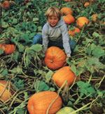

Mother's Children
I have a booming pumpkin business. I grow pumpkins and sell them in the month of October. I started my venture three years ago in a 3,000-square-foot area, and now I'm planting one three times as big!
Every year my dad and I till up a field and dig holes where each plant hill is going to be. The hills are spaced anywhere from four to twelve feet apart, depending on the variety of pumpkin. We put a shovelful of cow manure in each hole (thanks to our local dairy farm). We also put in a few cups of organic fertilizer: cottonseed meal, lime, rock phosphate, ashes, and kelp meal. Then we mix it all together with soil.
After that I plant three or four seeds in each hill. After the pumpkins sprout, I transplant and thin as needed to make sure there are two or three plants in each hill. The young plants need a lot of water after being transplanted, so I really soak them. I also weed thoroughly.
A few weeks later the plants will probably need another watering. That takes a long time. My sister Danika weeds and waters with me. I pay her depending upon how much money I make. (This year she worked 20 hours and I paid her $25. Danika also grew gourds and sold them-she made $75 from her gourds!)
The next job with the pumpkins is mulching. My whole family helps with this job-all six of us. We spread spoiled hay under all the vines and in the open places to keep the ground moist and control weeds. The best thing to do after mulching on a hot afternoon is to go for a swim!
For the rest of the summer all I have to do is water the pumpkins and watch them get ripe. You can actually see them getting bigger and bigger every day!
This year I grew three varieties of pumpkins. The Spirit hybrid semibush variety produced nice, medium-sized pumpkins. I also grew some Connecticut Field pumpkins. They make big, orange, pretty pumpkins and are my favorite variety. And I grew some Small Sugars, a sweet pumpkin that weighs between three and seven pounds.
The selling of my pumpkins starts around October 8. I set up a stand that consists of hay bales and a little table made of sawhorses and a piece of plywood. I put 20 to 25 bales on the ground and then place my pumpkins on top of them and on the ground around them. I weigh the pumpkins on a baby scale and mark the price on each one with a black crayon. I sell them for 8 cents a pound. Next year I'm going to raise the price because they are the cheapest and best pumpkins in town!
Every year I place an ad in the local newspaper. It seems to bring many customers. Also, this year we made little signs to put in store windows. Two years ago my dad made me a sign to put by our driveway. It says Pete's Pumpkins, 8 cents a Pound. Many people just see the sign and drive in to take a look. They end up buying a few pumpkins, too. (When no one's at the stand, people serve themselves and put the money in a jar.)
Selling the pumpkins is really time-consuming. On a busy day I spend most of the afternoon by the stand helping customers. One day was so busy that I made $120!
My pumpkin financial arrangements work out like this. Each year I pay for seeds, gas for the tiller, organic fertilizer, advertising, and any labor that I hire. All that added up to $45 this year. My sales totaled $610, so I ended up with $565 net profit.
I have doubled my sales every year. The first year I made $150. The second year I made $300, and this year I made $610. My total earnings from all three years topped $1,000!
I have really enjoyed growing and selling pumpkins. I make more money than some kids who work a lot longer than I do. I also set my own hours. Besides, it's fun!
By the way, if you decide to start growing and selling pumpkins yourself, please don't do it too close to Whidbey Island, Washington. I don't need any competition!
|
 |
|
|